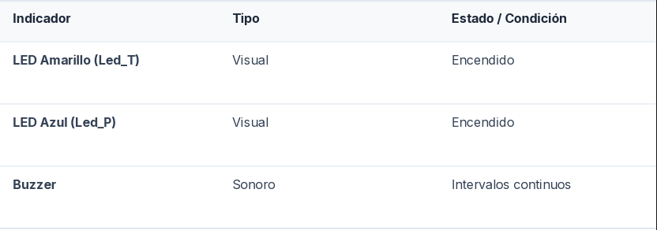

MANUAL DE USUARIO
Máquina Expendedora de Productos de Higiene Femenina
1. Introducción y Propósito del Sistema
La Máquina Expendedora de Productos de Higiene Femenina es un sistema
automatizado diseñado para facilitar el acceso rápido, sencillo y
autónomo a insumos de higiene personal (toallitas y protectores diarios)
en espacios educativos e institucionales.
Está dirigida a las estudiantes, personal y usuarias de la comunidad
escolar o de las instalaciones donde se encuentre instalado el prototipo.
2. Requisitos Previos y Verificación Inicial
Antes de iniciar la operación del equipo, asegúrese de cumplir con los siguientes puntos de verificación:
- Comprobar la conexión eléctrica de la batería de 9V para motores y la conexión del puerto USB/Arduino al sistema principal.
- Verificar que los LEDs indicadores y las luces del módulo estén encendidos en estado de reposo/standby.
3. Guía de Uso Paso a Paso (Interacción del Usuario)
Siga estas instrucciones para solicitar un producto del dispensador:
Paso 1: Identificación del producto
Identificar el producto que se desea seleccionar: toallitas en el Botón T o protectores diarios en el Botón P.
Paso 2: Presionar el botón
Presionar una sola vez el pulsador correspondiente al producto elegido.
Paso 3: Respuesta del sistema
Si HAY STOCK: el LED indicador correspondiente se encenderá y el motor
despachará el producto en el depósito de salida.
Si NO HAY STOCK: se emitirá una señal sonora de alerta (Buzzer)
avisando que el producto no está disponible.
Paso 4: Retiro del producto
Retirar el producto dispensado del depósito de salida.
4. Señales del Sistema (Luces y Sonidos)
El sistema utiliza la siguiente matriz de indicadores para comunicar su estado operativo.

5. Mantenimiento y Resolución de Problemas para el Operador
Guía de procedimientos para el personal encargado de la atención y soporte del dispositivo.
¿Qué hacer si no dispensa el producto?
Comprobar la alineación del mecanismo helicoidal/empujador y verificar el nivel de carga de la batería de 9V que alimenta los motores.
¿Qué hacer si el sistema no responde al pulsar un botón?
Verificar la conexión del cable USB de comunicación serie con el servidor Python y confirmar que el programa de control se encuentra activo.
¿Cómo recargar el stock de los compartimientos de productos?
Abrir el gabinete de almacenamiento, colocar las unidades de toallitas y/o protectores en los canales correspondientes asegurando su correcta orientación, y actualizar el conteo en el sistema de gestión.